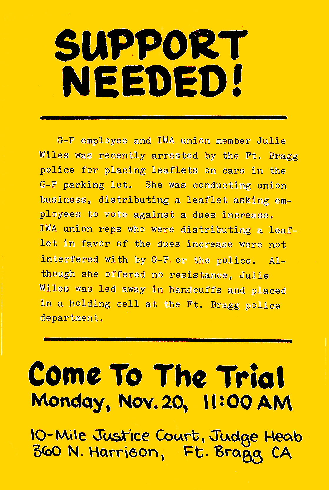

IWA Rank-and-File Union Millworkers Reply: Victims of G-P’s Fort Bragg Mill PCP Spill Speak Out
Written by Ron Atkinson, Cheryl Jones, Joe Valdao, Julie Wiles, and Treva VandenBosch
Edited by Judi Bari - Anderson Valley Advertiser, December 13, 1989, Mendocino Commentary, December 14, 1989 and the Industrial Worker, January 1990.
Web Editor's Note: all of these workers authorized Judi Bari and the IWW to represent them before OSHA hearings that soon followed.
Judi Bari’s Introduction: Unionism was hard won in the Pacific Northwest. In the early 1900’s, the IWW stepped in where the AFL feared to tread, and broke the stranglehold of the timber barons on the loggers and mill workers. The companies and the government fought back with terror and bru-tality eventually crushing the IWW and settling instead for the more cooperative “Business Unions”.
Today these unions have stood by and watched the erosion of the gains the people fought so hard to win. The following statement from five workers at the Georgia-Pacific mill in our area shows the situation timber workers are in today, both from the companies and the “Business Unions”.
The PCB Spill
Recently, articles by International Woodworkers of America Local #3-469, (AFL-CIO) Business Representative Don Nelson and Trustee Park Singleton have been appearing in the local papers, stating their views on events in our union. We respect their right to speak up, and we appreciate their participating in the democratic process. Now we, the rank-and-file union members, would like to exercise that same right and let our opinions be known.
Much of the current strife in our union goes back to the PCB spill last February. On Saturday, February 11, 1989, Head Millwright Frank Murray was checking the machinery when a capacitor burst, dumping 5-7 gallons of PCB-laden oil right in his face. The force of it caused him to swallow quite a bit of it. Fellow millwright Ron Atkinson found Frank with his skin and clothing soaked, gagging on the oil and temporarily blinded with the PCBs burning his skin and eyes. The capacitor was clearly marked with PCB warning labels, but the company insisted it was just mineral oil; so Frank’s stomach was not pumped when he went to the hospital. He was merely washed off and returned to work the same night, still wearing the same PCB-soaked clothing.
The capacitor continued to leak, spreading PCB-oil on the workroom floor and on the belt leading to the hog, where it was burned and spewed over Fort Bragg in the form of dioxin. The company “contained” the spill by taping a plastic garbage bag under it, and spreading out paper towels on the floor. Ron Atkinson and other millwrights were sent to weld and cut machinery near the PCB-oil, and worked standing in PCBs and breathing dioxin fumes during two 10-hour days. Although the union has people designated as safety officers who are allowed to inspect unsafe conditions during work time, the union was notified but did not get involved, and people continued to work in the area.
On Monday Treva VandenBosch came to work, got oil on her skin and saw the PCB label. Since workers are not allowed to leave their work stations, Treva asked the union safety officer to talk to management for her. He sent word back that it was just mineral oil, and she should keep working. Eventually Treva climbed up on the machine and read the PCB label closely. She then called the emergency number listed on the label and notified OSHA and the local fire department of the spill. A sample was taken, and by Monday evening it had come back positive for high levels of PCBs. Yet management continued to make people work in the area, exposing three more shifts of workers to the poisons.
Halfway through the shift the next day, management roped off the immediate spill area, but continued to run the hog and make people work nearby. When Treva complained that the spill was not contained and people were still being exposed, her supervisor told her to leave the job if she felt it was unsafe.
Treva argued with her supervisor, then walked off the job and went straight to the union office. She was told that Don Nelson was out, and nobody else could help her. She was not even advised of her rights. These rights include the right to refuse to work in an area that a reasonable person would consider dangerous. A decent union would have advised us not to work near the spill, and shut the plant down on the spot. But all attempts by Treva and others to get our union to represent us on the issue have resulted in nothing but hostility and excuses.
So Treva tried by herself to get the company to close the mill and protect the other workers, who were still being exposed to the toxins. She single-handedly picketed the Georgia-Pacific plant, demanding to meet with a high company official who had flown in from Oregon. Finally, on Tuesday night, the plant was shut down and remained closed for clean-up on Friday. OSHA has since ruled that G-P willingly exposed workers to PCB’s, and fined the company $14,000.
Throughout this traumatic incident, Don Nelson never once talked sympathetically to the workers who were poisoned. In fact, he accused them of “making a mountain out of a molehill.” He publicly defended the company, saying they had been “completely above-board” and he testified in the company’s behalf at the OSHA hearing. He said on KMFB radio that PCB’s are not proven harmful, and published a statement diminishing the incident, saying that “there were no known serious injuries because of this spill.” Yet, six months later Frank still had a bodily PCB level of 386 parts per million, when the EPA standard is 0.26 parts per billion.
Because he failed to represent us and because he failed to advise us of our rights, we hold Don Nelson directly responsible, along with Georgia-Pacific, for exposing at least 18 extra people on three shifts to these deadly poisons. We breathed the fumes, we got it on our skin and clothing, we tracked it into our homes and onto the carpets where our babies crawl. For three days it was burned in the power house and spewed out over the entire community. When we most needed our union, Don Nelson not only failed to be there for us, he actually took the company’s side. We cannot forgive him for this.
The Strike Vote
With this backdrop of distrust, Don Nelson set out to negotiate our contract last summer. “Negotiate” is actually too strong a word for what Nelson does—basically the company proposes the contract and Nelson accepts it. In 1985 the union (International Woodworkers of America Local #3-469 - AFL-CIO) had gone belly-up to the company, and accepted wage and benefit cuts totaling about 25%. Laborers’ wages went from $10.71 an hour to $8.74 an hour, we lost four holidays, and vacations were cut by 30%. Starting wage at the union G-P mill was set at the same rate as the non-union Louisiana-Pacific mill—$7.00 an hour. Nelson urged us to accept these cutbacks because the company needed more profits to assure us continued employment. We were told that our wage rate would be restored by periodic “bonuses” based on the company’s rate of profit.
Since then Georgia Pacific has made record profits. They are negotiating with the Russians to set up operations in Siberia, and they are engaged in a hostile takeover of a paper company in Maine. Yet our “bonuses” have come to only one-third of what we lost. Even worse, tying our wages to the company’s profits goes against the basic principles of unionism. It makes us work against our own interests, since G-P is making these profits by speeding us up at the mill and overcutting the forest. If they don’t slow down to a sustainable level there will be no more G-P forests and no more G-P mill jobs in Mendocino County. Yet to make a living wage, we must serve as unwilling co-conspirators in the stripping of the forests and the destruction of our own jobs.
Our National Union president, Bill Hubble, has denounced these profit/wage plans and urged local unions to fight against them. Yet Don Nelson came back with more of the same in this year’s contract. Adding insult to injury, wages were only increased by 3%, 2%, and 2% over the three years, keeping us well below our pre-1985 levels.
One final disaster in our 1989 contract was the complete elimination of the Woods Division. G-P has been quietly phasing out our union loggers for years, replacing them with ‘gyppos,’ without so much as a whimper from the union. People fought and died to bring unionism to the woods, and the IWA has always prided itself on being an industrial union, combining loggers and millworkers into the same bargaining unit. Now there are no more union loggers in Mendocino County, and wages and conditions in the woods are fast declining. The loss of the loggers to our union was like the loss of our right arm. With L-P setting the precedent by opening mills in Mexico, millworkers will be hard pressed to fight for our jobs alone.
When we saw the contract Nelson had gotten us, the union members spoke loud and clear with one voice. Management told us it was a good contract, and we should vote for it, but we voted by an incredible 88% margin to strike. And we were ready to walk. We realized what kind of fight we would be facing, and we had a clear strategy of how we could win.
Nelson’s reaction was to call a union meeting and trot out a federal mediator and the regional union rep. Then all three levels, federal, regional and local did everything they could to talk us out of striking. They told us we would never win, we’d all get fired, and we’d never make back what we lost. Of course, if this were true, we’d never have a union or a contract to start with. But it’s pretty hard to win a strike when your union leaders are against you. So, scared for their jobs, people voted to accept the contract. But we didn’t like it then, and we still don’t like it.
The Arrest of Julie Wiles
No sooner had the contract fracas died down than Don Nelson hit us with his next move. He wanted to raise our union dues by 25%. We already pay $22.50 a month, which is quite a bite, especially considering how little we get for it. The irony of the dues increase is that our Union Constitution sets the dues at 2½ times the low wage. So when our wages were cut, union dues went down too. Also, now that the loggers have been lost to the union, there are fewer members from whom to collect the $22.50. So the union’s “financial crisis” was directly related to the failure to adequately represent us.
Several of us published a leaflet urging fellow union members to vote “No” on the dues increase. We tried to post the leaflets in the plant, but management kept ripping them down, even though they let Nelson’s leaflets (urging a “Yes” vote) stay up. Union member Julie Wiles then tried to exercise her democratic rights by passing the leaflets out in the parking lot. Nelson’s men were passing out their leaflets at the gate, and Julie put our leaflets on the car windshields. She was then approached by two Fort Bragg city police officers who told her it was illegal to put leaflets on windshields. Julie replied that she believed it was okay, because the National Labor Relations Act guarantees her right to engage in union activity at the workplace. But she said she didn’t want to cause trouble, and would leave anyway.
As she was leaving, though, G-P security chief Lee Goebel came up and demanded that Julie be arrested. The police said it wasn’t necessary, since she was leaving anyway, but Goebel insisted. He said he wanted to place her under citizen’s arrest, on orders from G-P plant manager Don Whitman. Although Julie offered no resistance at any time, the Fort Bragg police then handcuffed her and took her away as astonished co-workers looked on.
Since then, the union has left Julie to face these charges alone. Nelson has not even filed a grievance against the company for the arrest. He claims that the National Labor Relations Act does not cover her because she was not organizing to bring a new union in, but rather working within the existing union. Fortunately, the NLRB lawyers say that doesn’t matter, and her activities are covered by the Act. Julie’s trial will be Wednesday, January 17 at 9 AM in the Ten-Mile Justice Court, Fort Bragg. We urge community members to come to the trial and show support.
Votes of No Confidence
After all this, the union members voted against the dues increase by a 2-1 margin. This was very defi-nitely a vote of no confidence in Don Nelson’s leadership. The duties of our paid union rep are clearly spelled out in our constitution. They involve keeping the finances straight and enforcing the contract. They do not include running for County Supervisor or sitting on County committees. Nelson has published a list of eleven functions he claims he fulfills. Of these, only two (Contract and Grievances) are necessary. The rest, including Unemployment Appeals, Cal OSHA, Political Contacts and Political action are either duplications of services that are offered free by the agency involved, or they are part of Nelson’s Democratic Party political agenda.
In other words, what Nelson is running is not a union, but a socio-political center. Our union will take in $145,000 this year. We can afford to serve our 560 members on that amount, but we can’t afford to subsidize Don Nelson’s political ambitions. Nelson himself admits that the union members do not share his political views so why should we pay for them?
Nelson told us in a newsletter that if we rejected the dues increase, he would have to cut the hours of the paid union staff. That staff, by the way, consists of two full-time employees--Don Nelson and his wife Rosmarie. So we rejected the dues increase and now in spite of our mandate, he’s refusing to cut his hours. Instead the union has decided to withhold the portion of our dues money that we’re supposed to pay to the National Union. This is a dangerous move, since it can lead to the National Union placing our Local in trusteeship. A trusteeship would not only mean that the National Union would control our money, but they would suspend all our democratic rights, including the right to elect officers and vote on union business, for 18 months. In order to keep his full-time position, Don Nelson is willing to sacrifice this. Of course, he has good reason to fear union democracy. He is unlikely to win again.
The Environment
One final subject that we would like to address is the environment. Don Nelson’s son Crawdad and [Anderson Valley Advertiser editor and publisher Bruce Anderson's younger brother, Rob Anderson] have been portraying us in the Anderson Valley Advertiser and the Mendocino Commentary as being unconcerned about the destruction of the forest, and, in fact, as being somehow responsible for G-P’s logging practices.
[Web Editor's clarification: both Crawdad Nelson and Judi Bari were Earth First!ers at the time of this writing]
This is an insult to us. We are not stupid, and we can see as well as anyone else what the timber companies are doing to the trees. It’s our environment as much as yours and we go to the forest to camp, fish, hunt, and find solitude. Some of our families have lived here for five generations, and we know that our children will not be able to enjoy the forests as we have if they continue to be cut the way they are now.
In fact, our concern for the health of the forest is not less, but greater than that of the general community, because the loss of the forest will also mean the loss of our livelihoods. This is one of the reasons it is so important for us to regain control of our union. We don’t have many years left if things keep going the way they are now. Our only hope for continued employment is sustained yield logging. And we will need strong union if we hope to slow the company down enough so that we can have both jobs and forests in the future.
Much has been made of our supposed anonymity. But both Nelson and G-P have always known exactly who we are. We are IWA rank-and-file union members, and we work at the Fort Bragg mill. We are not being “stirred up by outside agitators,” as Nelson claims, although it is true we have been forced to turn to community members for support when our union failed to represent us on the PCB spill and arrest issues. One of the reasons we have a union is so that we can act together, without taking the personal risk of standing alone. The fact that we don’t all sign our names to everything we do does not mean we are not legitimate. We have good reason to fear retaliation.
Epilogue
On Tuesday, December 12, 1989, Judge Robert Heeb of the Ten Mile Justice Court dismissed the case wherein Julie Wiles was charged with the misdemeanor of littering by placing leaflets on employees’ vehicles in the G-P parking lot.